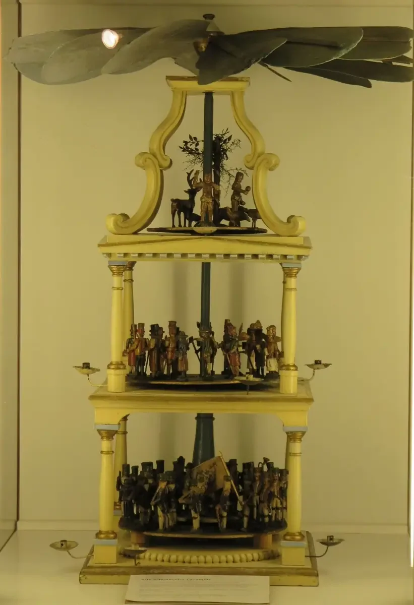
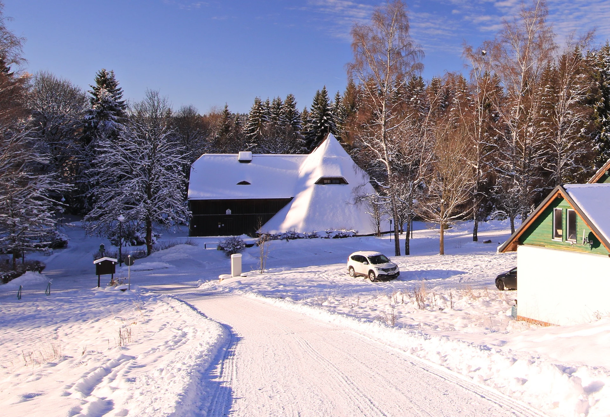
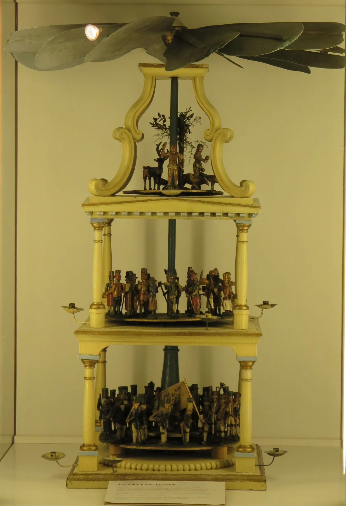
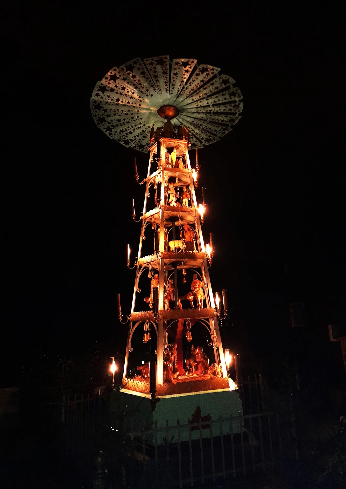
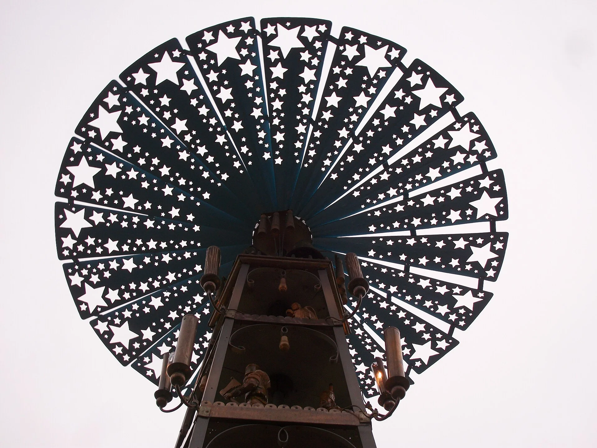

아직 펼치지 않은 카드손으로 빚은 성탄 장식 · 1성탄 피라미드아무도 밀지 않는데, 이 탑은 어떻게 돌아갈까요?아무도 안 미는데 빙글빙글 돌아. 어떻게 돌까?
1800년 무렵부터독일 작센 · 에르츠산맥 광산 마을
성탄 피라미드
독일 에르츠산맥의 광산 마을. 성탄 전날 일찍 일을 마친 광부는 집에 와서 ‘촛대 상자’를 풀었어요. 지금 남은 가장 오래된 피라미드의 층을 차례로 놓고, 불을 켜서 돌려 보세요.
독일 산골 광산 마을에서는 성탄이 오면 불로 도는 탑을 세웠대. 우리도 한 층씩 꾸미고 불을 켜 볼까?
검수 전 시안이에요(기준서 1판). 성탄 전날 광부들의 하루는 지크프리트 지버의 연구(1959)를, 피라미드의 층은 에르츠산맥 박물관 기록을 따랐어요. 상상은 ‘눈 감고 상상해 보기’에서만 해요.
시안 확인용카드 단계 미리 보기
1
말이 돌리던 광산의 탑
독일과 체코 사이의 에르츠산맥은 ‘광석의 산’이라는 뜻이에요. 16세기부터 이렇게 불렸어요. 그때 이 산에는 광석을 캐는 광산이 곳곳에 있었어요.
광산에는 ‘말 권양기’가 있었어요. 권양기는 무거운 것을 감아 올리는 기계예요. 말이 긴 팔을 끌며 원을 그리고 돌면 가운데 굵은 축이 돌아가요. 축에 감기는 줄이 깊은 갱도에서 광석 통을 끌어 올렸어요.
프라이베르크 근처 힘멜스퓌르스트 광산에도 말 권양기가 있었어요. 프라이베르크 광산 대학에 그 모형이 남아 있어요.


“‘돌아가는 촛대’라고도 불렀는데, 옛 광산의 권양기를 본뜬 것이에요.”
지크프리트 지버, 「에르츠산맥 광부들의 성탄 풍습」(1959) · 독일어를 이 안내서가 옮김
에르츠산맥 사람들은 이 탑을 사투리로 ‘페레메트’라고 불러요. 가운데 축에 층층이 판을 꿴 모양을 보고 말 권양기를 떠올린 사람들이 있었을 거라고 해요.
광산에서는 말이 빙빙 돌면서 무거운 광석을 끌어 올렸대.
물어보기말이 빙빙 돌리는 기계랑 피라미드, 어디가 닮았어?
2
성탄 전날의 ‘촛대 상자’
에르츠산맥의 향토사가 지크프리트 지버는 옛 광산의 성탄 전날을 이렇게 적었어요.
프라이베르크 근처 힘멜스퓌르스트 광산의 광부들은 12월 24일에도 여느 날처럼 새벽 네 시에 모였어요. 성탄 전 마지막으로 일하는 날이었어요.
큰 새참 때까지만 일했어요. 작은 걸상에 둘러앉아 아침을 먹고, 이야기를 나누고 성탄 노래를 불렀어요. 발파 구멍이 모두 터지기를 기다렸다가, 여느 날보다 일찍 땅 위로 올라왔어요.
“집에 오면 광부는 촛대 상자를 풀고 성탄을 준비했어요.”
지크프리트 지버, 「에르츠산맥 광부들의 성탄 풍습」(1959) · 독일어를 이 안내서가 옮김
광부들은 곳곳에서 초를 든 광부와 천사를 나무로 깎았어요. 피라미드도 광부들이 만든 불빛 가운데 하나였어요.
성탄 전날, 우리 집 ‘촛대 상자’를 연다면 무엇부터 꺼낼까요?
성탄 전날엔 광부 아저씨들이 여느 날보다 일찍 집에 왔대.
물어보기일찍 집에 온 아빠가 상자를 열면, 무엇이 나올까?
3
가장 오래된 피라미드에 불 켜기
안나베르크부흐홀츠의 에르츠산맥 박물관에는 따뜻한 공기로 도는 성탄 피라미드 가운데 지금 남은 가장 오래된 것이 있어요. 예전 주인의 이름을 따서 ‘렌츠의 피라미드’라고 불러요.
층이 넷이고, 맨 위에 커다란 날개가 열 장 달렸어요. 박물관 기록은 층마다 선 인형을 아래층부터 적어 두었어요. 그 차례대로 놓고, 끝으로 불을 켜 보세요.
이 피라미드에는 지금도 유채 기름을 태우는 작은 등잔이 달려 있어요. 뒤에 나온 피라미드들은 등잔 대신 초로 돌렸어요.
무대 그림은 박물관 기록의 차례를 따라 이 안내서가 그렸어요. 실제 피라미드의 모습과는 달라요.
피라미드를 한 층씩 꾸며 볼까? 맨 아래는 광부 아저씨들이야!
물어보기불을 켜면 어떻게 될까?
4
마을 광장의 큰 피라미드
1930년대부터 에르츠산맥의 성탄 장터에 사람 키보다 훨씬 큰 피라미드가 몇 개씩 서기 시작했어요. 1950년대까지도 독일 전체에 열 개 남짓이었다고 해요. 오늘은 독일 곳곳의 성탄 장터에 큰 피라미드가 서요.
사진은 슈바르첸베르크 광장의 크라우스 피라미드예요. 날개판에 별 모양 구멍이 촘촘히 뚫려 있어요.

오늘 에르츠산맥의 성탄 철은 대림절 첫 주일 무렵 ‘피라미드 밀기’로 시작해요. 마을 사람들이 모여 큰 피라미드를 처음 돌리는 날이에요. 빠른 곳은 그 앞 금요일 저녁부터 돌려요. 이 고장 사투리로는 ‘페레메트 아쉼’이라고 해요.
성탄 철은 2월 2일 성촉절에 끝나요. 성촉절은 아기 예수를 성전에 바친 날을 기억하는 축일이에요.
마을 광장에는 집보다 큰 피라미드가 서. 다 같이 모여서 처음 돌리는 날도 있대!
물어보기이렇게 큰 피라미드를 처음 돌리는 날, 너라면 무슨 말을 외칠래?
눈 감고 상상해 보기
창밖은 오후 네 시인데도 벌써 깜깜해요. 땅속에서 일찍 올라온 아빠가 나무 상자를 열자, 마른 나무 냄새가 퍼져요. 작은 등잔에 불을 붙이면 잠시 뒤 머리 위 날개가 삐걱 움직여요. 광부 인형들이 천천히 한 바퀴 돌아 다시 내 앞으로 와요.
눈을 감아 봐. 창밖은 깜깜해. 아빠가 상자를 열어. 불을 붙이면… 날개가 삐걱! 인형들이 빙글빙글 돌아 다시 와.
나의 자리
보이지 않게 나를 움직이는 따뜻한 힘은 무엇인가요?
촛불처럼 따뜻하게 누군가를 움직이게 하는 말은 뭐가 있을까?
마음에 닿는 한 줄을 고르거나 직접 써 보세요. 한 줄을 남기면 이 자리의 도장이 찍혀요. 이 기기에만 저장돼요.
더 깊이
궁금한 칸만 펼쳐 읽어도 괜찮아요.
알고 보면
빛 틀 옛날 브란덴부르크와 작센의 교회에서는 대림절에 ‘빛 틀’을 세웠어요. 푸른 가지를 감은 막대 네 개를 꼭대기에서 묶고 초를 꽂은 모양이었어요.
첫 피라미드 성탄 인형을 올린 피라미드는 1790년 무렵부터 나타났다고 해요. 독일 성탄 박물관은 피라미드가 18세기에 이미 교회의 성탄 장식이었다고 소개해요.
돌아가는 원리 가운데 축에 층층이 둥근 판이 꿰여 있고, 맨 위에 날개가 달려 있어요. 축의 뾰족한 아래 끝은 받침의 오목한 자리에 서 있어요. 판 가장자리의 불이 데운 공기가 날개를 돌리면, 같은 축의 판들도 함께 돌아요.
초가 싸지자 1830년 무렵 파라핀이 나와 초가 누구나 살 만큼 싸지면서, 피라미드가 독일 곳곳으로 퍼졌다고 해요. 파라핀은 석유에서 얻는 하얀 밀랍 같은 재료예요.
기록마다 다른 점
가장 오래된 피라미드의 나이 독일 성탄 박물관은 렌츠의 피라미드를 1800년 무렵 것으로, 이 피라미드를 가진 안나베르크 박물관의 기록은 1810년 무렵으로 적었어요.
권양기를 본떴을까 지버(1959)는 피라미드가 옛 광산의 권양기를 본뜬 것이라고 적었어요. 다른 글은 모양이 권양기를 떠올리게 했을 거라고만 말해요. 따뜻한 공기로 도는 장치까지 권양기에서 왔는지는 확실하지 않아요.
‘피라미드’라는 이름 한 개신교 매체는 나폴레옹의 이집트 원정(1798~1801) 소식이 전해진 뒤 이 말이 이 고장 사투리 ‘페레메트’로 자리 잡았다고 소개해요.
직접 가 보기

확인한 날 · 2026년 11월 18일 · 바뀌기 쉬운 정보라 정기적으로 다시 확인해요
렌츠의 피라미드는 안나베르크부흐홀츠의 에르츠산맥 박물관에 있어요. 박물관 마당에서 16세기 초의 옛 은광 ‘임 괴스너’로 내려갈 수 있어요. 여는 때는 미리 확인해 주세요.
대림절 첫 주일 무렵 에르츠산맥 마을들이 ‘피라미드 밀기’를 해요. 마을마다 날이 조금씩 다르니 관광 협회 일정표를 보세요.
기록 차례대로 불 켜기 금박
박물관 기록의 차례(아래층부터 광부 행렬, 아기 예수 탄생, 동물, 천사)대로 놓고 끝으로 불을 켜면 카드에 금박이 입혀져요.
광부 행렬 → 아기 예수 탄생 → 동물 → 천사 → 불 켜기
우리 집 촛대 상자 채색
둘 가운데 하나만 해도 카드가 채색돼요.
광부처럼, 성탄 전날 ‘촛대 상자’에서 먼저 꺼낼 것 고르기
아이와 함께 ‘영화처럼 보기’를 끝까지 보기
근거 보기 (10)
- 지크프리트 지버, 「에르츠산맥 광부들의 성탄 풍습」, 『데어 안슈니트』 1959년 6호(독일 광산 박물관) — 12월 24일 힘멜스퓌르스트 광산, 촛대 상자, ‘돌아가는 촛대’와 권양기, 촛불 광부·천사
- sachsen.museum-digital: 에르츠산맥 박물관 ‘렌츠의 피라미드’ — 1810년, 네 층과 날개 열 장, 층마다 인형(아래층부터)
- 독일 성탄 박물관(로텐부르크): 피라미드 — 18세기 교회 장식, 렌츠의 피라미드 1800년 무렵·유채 기름 등잔, 돌아가는 원리
- evangelisch.de(2009): 피라미드와 슈비보겐 — 교회의 빛 틀, 권양기를 떠올린 모양, 1790년 무렵, ‘페레메트’, 1830년 파라핀
- TU 베르크아카데미 프라이베르크 소장품: 힘멜스퓌르스트 광산의 말 권양기 모형 — 16~19세기 광산의 권양기, 말이 돌리던 축과 줄
- TU 켐니츠 대림절 달력(1997): 광부의 성탄 — 16세기부터 ‘에르츠산맥’이라는 이름, 촛불 천사와 광부 한 쌍
- TU 켐니츠 대림절 달력(2003): 에르츠산맥 박물관과 옛 은광 — 박물관 마당의 은광 입구, 1510년 무렵의 광구 주인
- TU 켐니츠 대림절 달력(2004): 피라미드 밀기 — 대림절 첫 주일 앞 금요일 저녁부터, 사투리 ‘페레메트 아쉼’
- 에르츠산맥 관광 협회 보도 자료(2019) — 성탄 철은 피라미드 밀기로 시작해 성촉절에 끝남
- The German Way: 독일 성탄 피라미드 — 1930년대부터 장터의 큰 피라미드, 1950년대에도 열 개 남짓
그림·사진·소리 출처
‘처음 만나는 기독교 문화’의 깊은 카드예요. 실제 인물의 사진은 쓰지 않았어요. 카드 단계와 남긴 글은 이 기기에만 저장돼요.